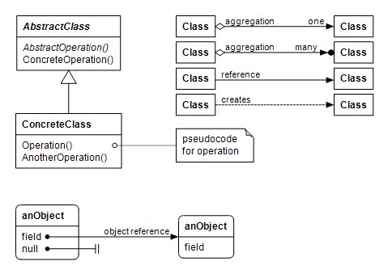
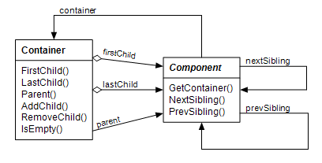
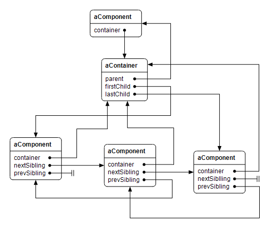

This document has two kinds of illustrations: class diagrams and object diagrams. A class diagrams shows static structure of types and their inheritance and ownerhip relations. An object diagram represents composition of objects at runtime. In these diagrams rectangles represent classes, rounded rectangles represent objects and arrows represent their relationships.
The component and container classes are used for building hierarchies of objects at runtime. The Component class is the base class of the Control class that represents a Windows control. It is also the base class of the classes that have no window handle of their own but form a hierarchy such as menu items. A component has pointers to its siblings and to the container object that owns it. A component can be part of at most one container at any given time. When a component is added to a container, it is automatically removed from any possible previous container before adding it to a new container.

A container object owns components added to it and is responsible for deleting them when itself goes out of scope or gets destroyed. It has pointers to the first and last child component and to a parent component. Typically a parent component has a container object for holding child components.
